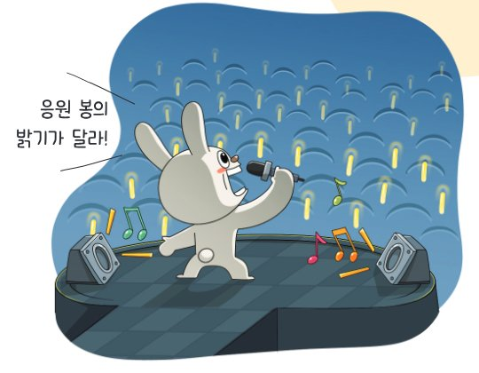
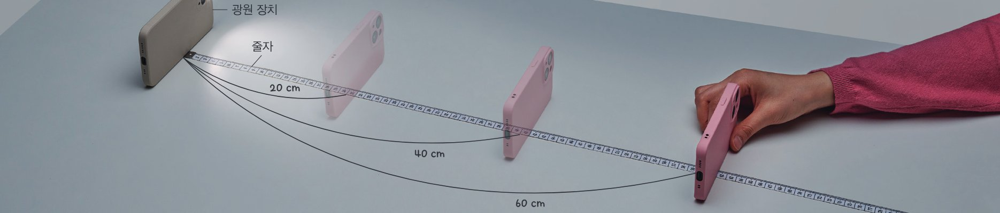

응원 봉의 밝기는 거리에 따라 어떻게 달라 보일까?

응원 봉은 모두 같은 제품이고 똑같은 밝기로 켜져 있어요. 그런데 무대에서는 밝기가 다르게 보여요.
광원으로부터의 거리에 따른 빛의 세기 실험하기

- 줄자 끝에 광원 장치를 놓고, 조도 측정 앱을 켠 스마트 기기를 광원에서 20 cm 거리에 둔다.
- 주변을 어둡게 하고 빛의 세기(lx, 럭스)를 측정한다. 광원과 측정 기기는 일직선에 놓는다.
- 40 cm, 60 cm로 옮기며 측정한다. 여러 번 재어 평균을 구하면 더 정확하다.
⚠ 광원을 눈으로 똑바로 보지 않고 보안경을 써요. 다른 모둠의 빛이 들어오지 않게 해요.
측정 결과 기록하기
우리 모둠이 잰 값을 넣으면 평균, 비, 그래프가 자동으로 나와요. 1회만 재도 괜찮아요.
| 거리 (cm) | 20 | 40 | 60 |
|---|
실험 기기가 없을 때: 가상 조도계
거리를 바꾸며 값을 읽어 위 표에 옮겨 적어요. 실제 측정값이 아니라 이상적인 모형 값이에요.
· 거리가 20 cm → 40 cm로 2배가 되면 빛의 세기는 약 가 된다.
· 거리가 20 cm → 60 cm로 3배가 되면 빛의 세기는 약 가 된다.
· 빛의 세기는 광원으로부터의 거리의 한다.
실제 실험값은 주변 빛, 광원의 크기, 각도 때문에 1/4, 1/9과 꼭 맞지 않을 수 있어요. 왜 차이가 났는지도 이야기해 보세요.
왜 이런 규칙이 나타날까?
광원에서 나온 똑같은 양의 빛(노란 점 36개)이 퍼지면서 비추는 칸 수를 관찰해 보세요. 거리를 바꿔도 점의 수는 항상 36개예요.
| 거리 | 빛이 비추는 칸 수 | 한 칸에 닿는 점의 수 | 한 칸의 밝기 |
|---|---|---|---|
| 1배 | 1칸 | 36개 | 1 (기준) |
| 2배 | |||
| 3배 |
광원에서 나온 빛은 멀어질수록 사방으로 퍼지면서 더 넓은 영역을 비춰 어두워진다.
거리가 2배, 3배가 되면 빛이 비추는 면적은 4배, 9배가 되므로, 같은 면적이 받는 빛의 밝기는 1/4배, 1/9배가 된다. → 빛의 밝기는 거리의 제곱에 반비례한다.
다르게 해 보기: 종이컵과 모눈종이 (교과서 273쪽)
검은색으로 감싼 종이컵 바닥에 작은 정사각형 구멍을 뚫어 광원에 붙이고, 빛이 모눈종이 1칸, 4칸, 9칸을 비출 때의 밝기를 비교해요. 구멍을 뚫을 때 손을 다치지 않게 조심해요.
별빛도 마찬가지일까?
별도 광원이에요. 별 A는 그대로 두고 별 B의 거리와 실제로 내는 빛의 양을 바꿔, 지구에서 보이는 밝기를 비교해 보세요.
- 별 A와 B가 내는 빛의 양이 같을 때, B가 A보다 어둡게 보이면 어느 별이 더 멀리 있을까?
- 별 B를 A보다 멀리 두고도 A와 똑같은 밝기로 보이게 할 수 있을까? 조건을 찾아보자.
- "어둡게 보이는 별은 무조건 멀리 있다"는 말은 옳을까?
예시 답안
1. 별 B. 같은 양의 빛을 내므로 멀리 있는 별이 어둡게 보인다.
2. 있다. 거리가 2배일 때 빛의 양이 4배, 거리가 3배일 때 빛의 양이 9배이면 같은 밝기로 보인다.
3. 옳지 않다. 보이는 밝기는 거리뿐 아니라 별이 실제로 내는 빛의 양에 따라서도 달라진다. 그래서 눈에 보이는 밝기만으로는 별까지의 거리를 판단할 수 없다. (다음 시간: 겉보기 등급과 절대 등급)
스스로 확인하기
처음 질문에 답해 보기
모범 답안 보기
거리가 2배가 되면 빛이 비추는 면적이 4배로 늘어나, 같은 면적이 받는 빛의 밝기는 1/4배가 된다. 빛의 밝기는 광원으로부터의 거리의 제곱에 반비례한다.
교사용: 수업 흐름 (45분)
| 단계 | 시간 | 활동 |
|---|---|---|
| ① 생각 열기 | 5분 | 응원 봉 그림(모두 같은 밝기임을 전제), 예상하기 |
| ② 실험 | 15분 | 모둠별 20·40·60 cm 측정 → 평균·비·그래프 (관찰 평가) |
| ③ 왜 그럴까? | 10분 | 빛이 퍼지는 모형으로 1칸·4칸·9칸 비교 |
| ④ 별에 적용 | 7분 | 두 별 비교, 다음 시간 등급과 연결 |
| ⑤ 확인 문제 | 6분 | 6문항 |
| ⑥ 정리 | 2분 | 예상과 비교하여 답하기 |
오개념 지도: 광원이 내는 빛의 세기(광도)와 어떤 면이 받는 빛의 세기(조도)를 구분해 주세요. 거리 제곱에 반비례하는 것은 조도입니다. 모둠 사이의 간격을 두어 다른 광원의 영향을 줄여 주세요. '예시 측정값'은 지도서의 값(136, 37, 14 lx)입니다.